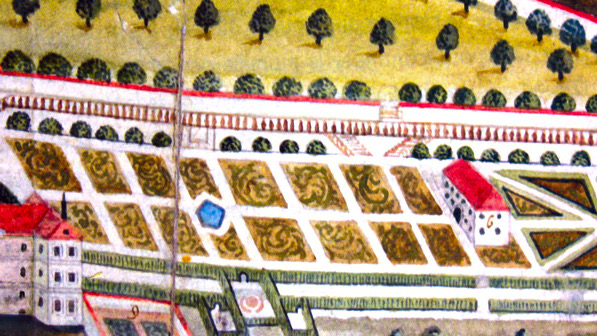

Ästhetik & Spiritualität
Klostergärten verbinden Schönheit, Ordnung und Kontemplation. Sie sind Ausdruck einer Gartenkultur, in der Natur, Symbolik und Spiritualität seit Jahrhunderten miteinander verwoben sind.
Ästhetik & Spiritualität, Klosterbotanik & Heilpflanzen, Kulinarik & Klosterküche sowie Transformation & Entwicklung.
Wissensgeschichte
Über Jahrhunderte wurden hier Kenntnisse über Pflanzen, Ernährung, Heilkunst, Landwirtschaft und Spiritualität bewahrt, weiterentwickelt und weitergegeben.

Klostergärten-Inventar
Es macht ihre Vielfalt für Gegenwart und Zukunft sichtbar.
Wissensfelder
Klostergärten waren seit jeher Experimentierfelder, in denen Wissen aus unterschiedlichen Disziplinen zusammengeführt und praktisch erprobt wurde. Als interdisziplinäre Kompetenzzentren schufen Klöster damit wichtige Grundlagen für eine nachhaltige, vielfältige und an lokale Gegebenheiten angepasste Kultur.
Klostergärten verbinden Schönheit, Ordnung und Kontemplation. Sie sind Ausdruck einer Gartenkultur, in der Natur, Symbolik und Spiritualität seit Jahrhunderten miteinander verwoben sind.
Klostergärten bewahren ein einzigartiges Wissen über Heilpflanzen, Kräuter, Kulturpflanzen und Biodiversität. Sie sind lebendige Archive botanischer Erfahrung und pflanzlicher Vielfalt.
Einige Klostergärten der Schweiz befinden sich gegenwärtig in einem Transformationsprozess. Sie entwickeln sich zu lebendigen Orten sozialer Projekte, gemeinschaftlicher Bildung und neuer Formen des Zusammenlebens. Dabei verbinden sie ihr historisches Erbe mit zukunftsweisenden gesellschaftlichen Aufgaben.
Von Heilkräutern über Fastenspeisen bis zu regionalen Spezialitäten: Die Klosterküchen der Schweiz erzählen eine Geschichte von Ernährung, Genuss, Selbstversorgung und kulturellem Wissen.